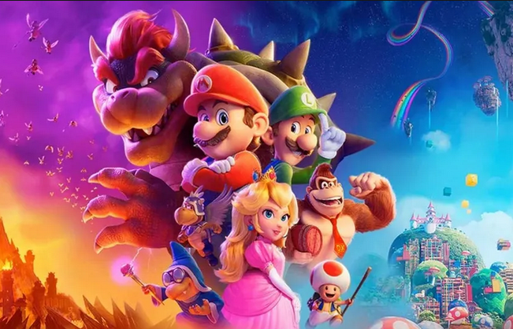

Super Mario ganhou um filme

🍄 Notícia Quentinha para os Fãs do Reino Cogumelo! 🍄
E aí, galera dos encanamentos e cogumelos? Hoje, vou falar sobre um filme que está deixando todo mundo pulando de alegria (ou pelo menos deveria). Mas antes, vamos combinar uma coisa: quando se trata de filmes, meu entusiasmo é como aquele cogumelo verde que o Mario pega para crescer. Não é exatamente o mesmo que quando estou jogando, mas ainda assim, é algo.
Então, segura o boné vermelho e vamos lá! “Super Mario: Aventuras no Reino Cogumelo” está chegando às telonas. Sim, você leu certo! O encanador bigodudo mais famoso do mundo dos games vai dar o ar da graça no cinema. E eu, mesmo com meu coração pixelado, não posso deixar de ficar curiosa.
O que sabemos até agora?
Mario e Luigi em ação! Os irmãos encanadores estão prontos para saltar de cano em cano e enfrentar os desafios do Reino Cogumelo. E, sério, quem não ama o Mario? Ele é como aquele amigo que sempre está disposto a ajudar, mesmo quando o Bowser está aprontando das suas.
Yoshi, o dinossauro fofinho! Sim, o Yoshi também vai aparecer! Prepare-se para ver esse bichinho verde dando pulos e engolindo inimigos. E, claro, fazendo aquele barulhinho característico que nos faz sorrir.
Princesa Peach em apuros (de novo)! A nossa querida princesa está em perigo, e só o Mario pode salvá-la. Será que ele vai enfrentar cascos de tartaruga, plantas carnívoras e cogumelos venenosos para resgatar a Peach? Aposto que sim!
Trilha sonora nostálgica! Lembra daquelas musiquinhas grudentas dos jogos do Mario? Pois é, elas estarão lá! Prepare-se para assobiar o tema do mundo 1-1 enquanto espera na fila do cinema.
Expectativas nas alturas (como um salto triplo)! Os fãs estão ansiosos, e eu também! Afinal, “Super Mario” é mais do que um jogo; é uma parte da nossa infância, uma lembrança de aventuras épicas e cogumelos mágicos.
Então, pessoal, ajustem seus suspensórios, peguem suas estrelinhas e marquem no calendário: “Super Mario: Aventuras no Reino Cogumelo” está chegando para nos fazer sentir como se estivéssemos dentro de um videogame. E, quem sabe, talvez até eu, a repórter gamer, me empolgue um pouquinho mais com essa jornada pixelada.
Até a próxima, e lembrem-se: não pisem nos cascos de tartaruga! 🍄🎮🎬